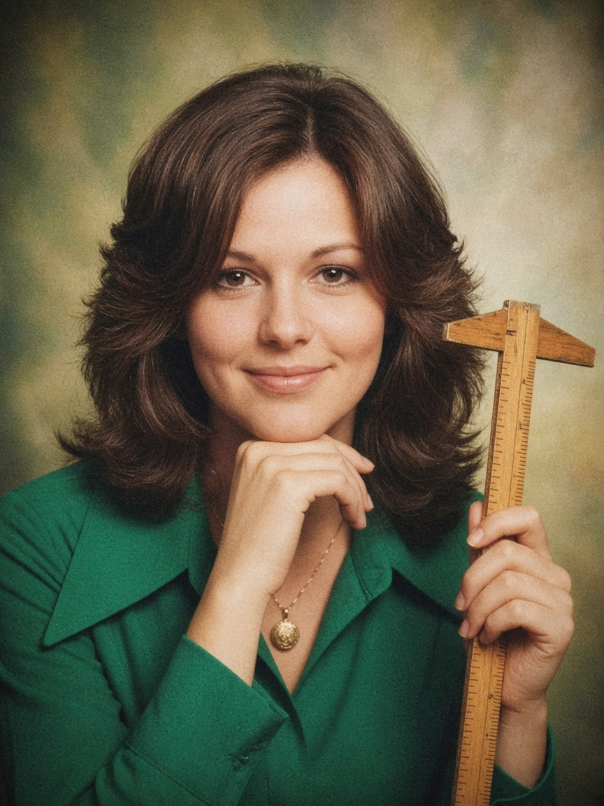
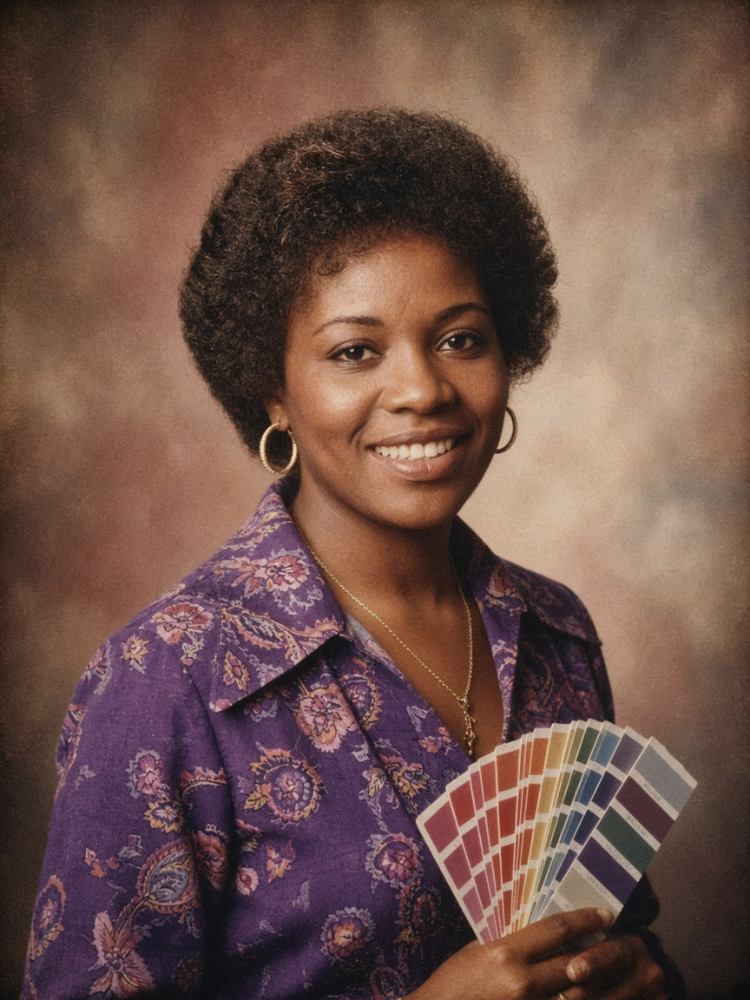
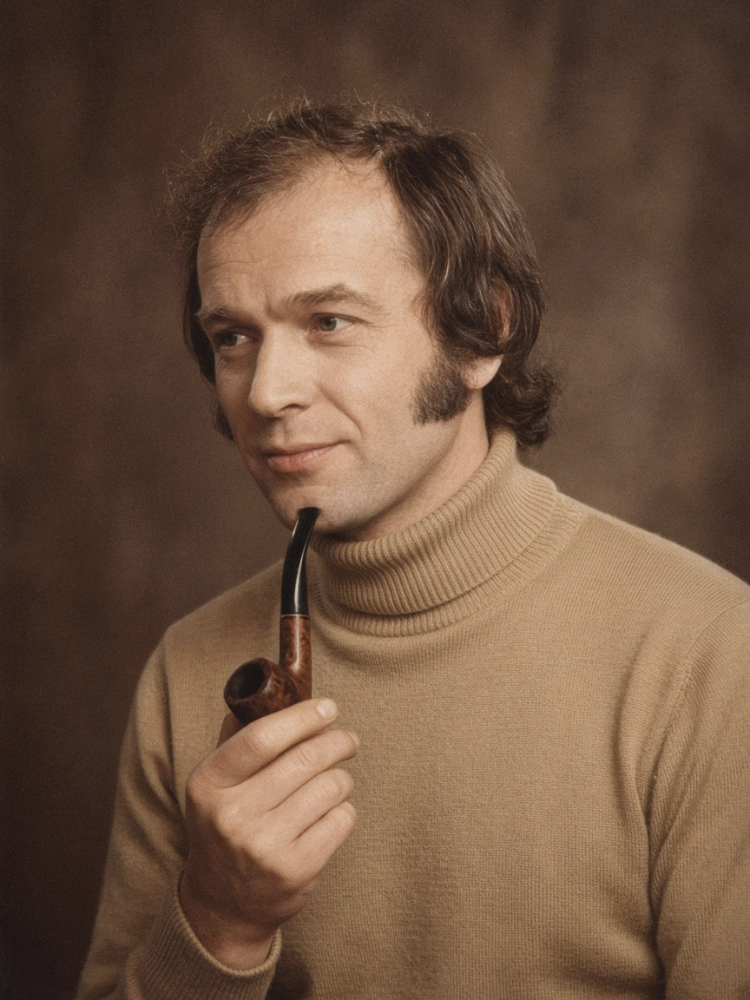
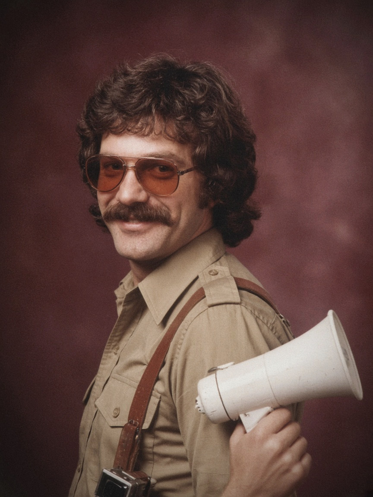
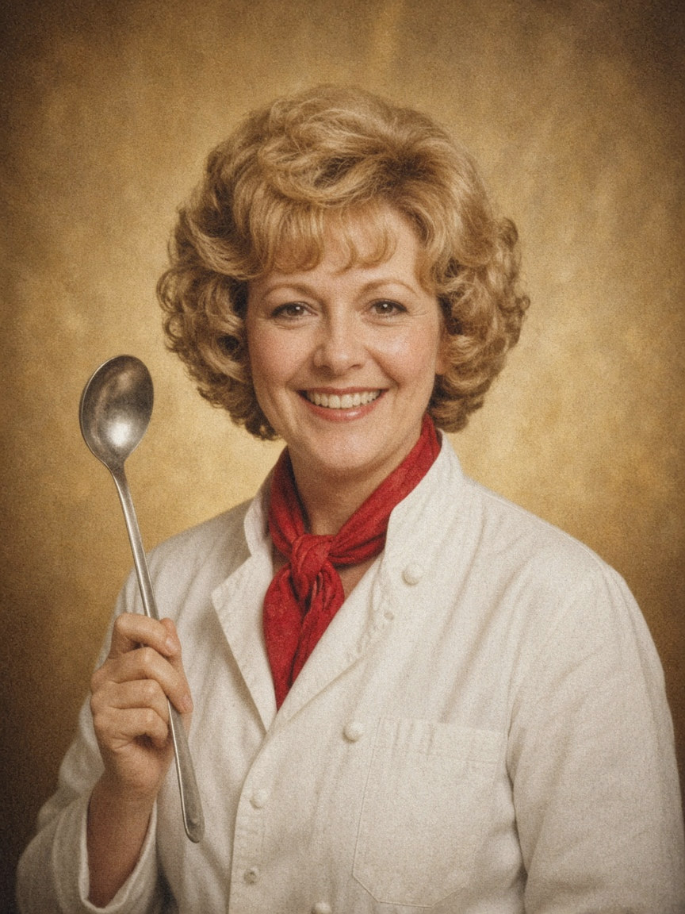

The loft, West 26th Street · Staff of twelve
The Team
A small staff, a large ashtray, and a creative director who will move a plant two inches and call it a philosophy.

Gaute
Creative Director & Owner · The Ad Man
Genius of the whole operation. The Ace stories are the masterpiece. The advertisements pay the rent, which he will tell you is also a kind of art. He will move a plant two inches and call it a philosophy.

Lillian Harrow
Director
She runs the floor, the payroll and the elevator that sticks on four. Has never been late. Has been unimpressed.

Marlene Quinn
Art Director
Draws only the Ace stories. Has a pencil behind each ear and a policy about everything else. Studio policy, and also the lawyers’.

Patty DiMarco
Graphic Designer
Letters the word balloons and will not letter a rate card. Keeps a T-square she has named. The name is not important. Illustrates only the Ace stories.

Della Rhodes
Graphic Designer
Colour, boards, and the only person who can find the good ink. Illustrates the Ace stories. Will not illustrate a toaster.

Whit Gant
Copywriter
Writes twelve words and takes the afternoon. The thirteenth word is billed separately. Owns a pipe he does not always light.

Rex Holbrook
Film Director
Shoots the commercials that pay for the ink. Owns a megaphone for a room the size of a closet. Says “that’s a wrap” at lunch.

Tess Lang
Personal Assistant to the Creative Director
Keeps his calendar, his cigarettes, and the plant he will later move two inches. Has a better memory than the appointment book.
Bonnie Sills
Secretary
Answers the telex, the rotary telephone, and questions that were not asked. Types ninety words a minute, including the ones she does not send.

Kay Ettinger
Secretary
Files what Bonnie will not file. Knows where the good letterhead is kept. Has never lost a memo. Has lost several lunches to the film department.

Helen Brubaker
Accountant
The books close when she says they close. Has a calculator and a look. Will not be moved by a Golden Starburst.

Dotty Kranz
Cook
Lunch is at one and not a minute later. The soup has a following. The Creative Director has been sent back for a napkin.
Twelve on the letterhead. Chuck Daley, the television spokesman, is not on staff; he is on television, which he will tell you is harder. The art department — Marlene, Patty and Della — illustrate only the Ace stories. Other names and roles are invented period-style characters. The portraits are new studio photographs in the manner of 1974.